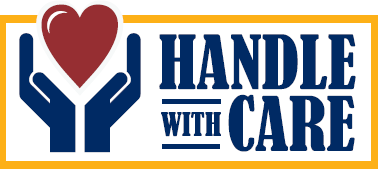

About
education
About
education
A Call- implementation
Occasional Paper No. 6 May 1, 2016

Handle with Care is a program designed for parents and caregivers to promote the mental health (social and emotional well-being) of children and families every day! Funded by the Public Health Agency of Canada, Innovations fund; it has been enthusiastically received by parents, and others, across PEI,
Why Handle with Care? The program’s focus is not only on building individual skills, but also on enhancing community capacity for collaborative, evidence-based approaches that build secure attachments, positive self-esteem, capacity for emotion expression and social relationships.
The program offers a new paradigm for positive everyday interactions, healthy emotional environments and stronger family-community connections.
Strategies and program delivery are based on community input and a mutual support model aimed at building community capacity building throughout the wider population, especially those who may be at risk for mental health challenges.
Who? HWC programs are open to all who wish to attend. We attract participants from across the economic and social spectrum, all of whom are at the table as parents or caregivers who desire to be the best they can be for the children they care for and interact with.
What? The program consists of four Building Blocks; each building upon the other.
Building Trust and Attachment
Building and Enhancing Self-Esteem
Expressing Emotions
Building Relationships with Others
Each Building Block contains the same format:
Key Message: the significance of the topic for the child and parent or other caregiver
Research: what we know about the topic and why it is important.
Self Care: caring for self enables one to care for others
Activities: stories, videos, discussion, crafts, games enhance understanding & skills development
Bringing it home: discussion as to how participants will integrate message into day to day living
Bringing it together: linking the importance of the key message to the experience and to previous experiences in other building blocks
We want our children, parents, and other caregivers to feel worthy and proud of who they are, as they are. It is for this reason that woven through everything we do is acceptance, caring, honor, respect, trust, understanding, encouragement and a steadfast belief that every parent wants what is best for their child and therefore will do whatever it takes to make that happen.
Benefits: Children grow in self esteem and confidence; focus and learn better; develop healthy relationships and mental and physical health.
Parents report growing confidence in using new parenting skills; have shown greater self esteem and self-worth and flourishing all leading to better family relationships and increased community involvement.
By building community capacity we see community and other groups working together in support of delivery of HWC programs.
Our Goal for 2015-18: To ensure sustainability of the program in PE; train additional facilitators and begin facilitator training and parent programs in our sister Atlantic Provinces. Contact us anytime for more information: Alice @tayloralice712@gmail.com; Eileen @econwaymartin@gmail.com
Alice Taylor, Guest Editor
The above article represents the views of the writer and not Education 20/20 Inc.
Education 20/20 Inc. 101 Kent St., PO Box 624/rue Kent, BP 624 Charlottetown, PEI C1A 1M0 Canada
Tel: 902-892-2060; Email: pei@education2020.ca; www.education2020.ca